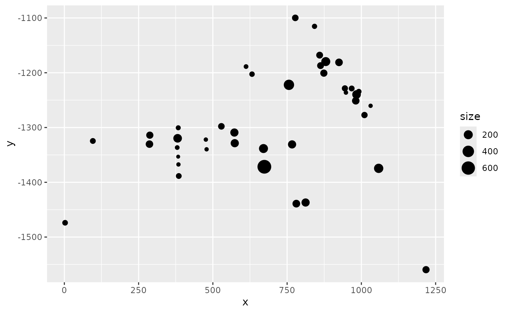

Coerces input SpatialPixelsDataFrame to data.frame and uses geom_tile to plot it.
# S3 method for SpatialPixelsDataFrame gg(data, mapping = NULL, crs = NULL, mask = NULL, ...)
Arguments
| data | A SpatialPixelsDataFrame object. |
|---|---|
| mapping | Aesthetic mappings created by aes or aes_ used to update the default
mapping. The default mapping is |
| crs | A CRS object defining the coordinate system to project the data to before plotting. |
| mask | A SpatialPolygon defining the region that is plotted. |
| ... | Arguments passed on to geom_tile. |
Value
A geom_tile return value.
See also
Other geomes for spatial data:
gg.SpatialGridDataFrame(),
gg.SpatialLines(),
gg.SpatialPixels(),
gg.SpatialPoints(),
gg.SpatialPolygons(),
gg(),
gm()
Examples
# \donttest{ # Load Gorilla data data("gorillas", package = "inlabru") # Plot Gorilla elevation covariate provided as SpatialPixelsDataFrame. # The same syntax applies to SpatialGridDataFrame objects. ggplot() + gg(gorillas$gcov$elevation)# Add Gorilla survey boundary and nest sightings ggplot() + gg(gorillas$gcov$elevation) + gg(gorillas$boundary) + gg(gorillas$nests)#># Load pantropical dolphin data data("mexdolphin") # Plot the pantropiical survey boundary, ship transects and dolphin sightings ggplot() + gg(mexdolphin$ppoly) + # survey boundary as SpatialPolygon gg(mexdolphin$samplers) + # ship transects as SpatialLines gg(mexdolphin$points) # dolphin sightings as SpatialPoints#># Change color ggplot() + gg(mexdolphin$ppoly, color = "green") + # survey boundary as SpatialPolygon gg(mexdolphin$samplers, color = "red") + # ship transects as SpatialLines gg(mexdolphin$points, color = "blue") # dolphin sightings as SpatialPoints#># Visualize data annotations: line width by segment number names(mexdolphin$samplers) # 'seg' holds the segment number#> [1] "mid.x" "mid.y" "Effort" "trans" "depth" #> [6] "seg" "quadrant.r" "angle.r" "strat"# Visualize data annotations: point size by dolphin group size names(mexdolphin$points) # 'size' holds the group size#> [1] "mid.x" "mid.y" "Effort" "trans" "depth" #> [6] "seg" "quadrant.r" "angle.r" "start.x" "start.y" #> [11] "end.x" "end.y" "det" "size" "distance" #> [16] "detected" "beaufort" "latitude" "longitude" "strat"# }